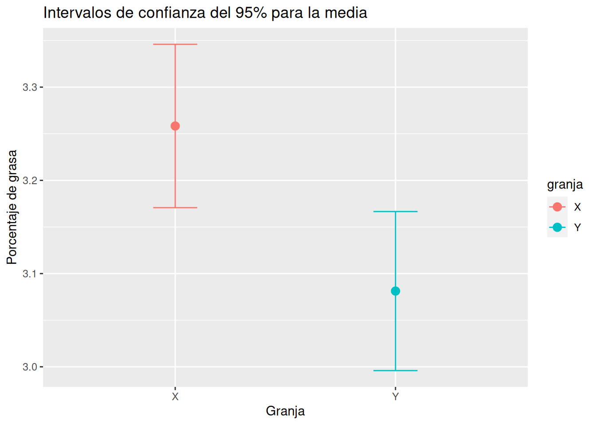
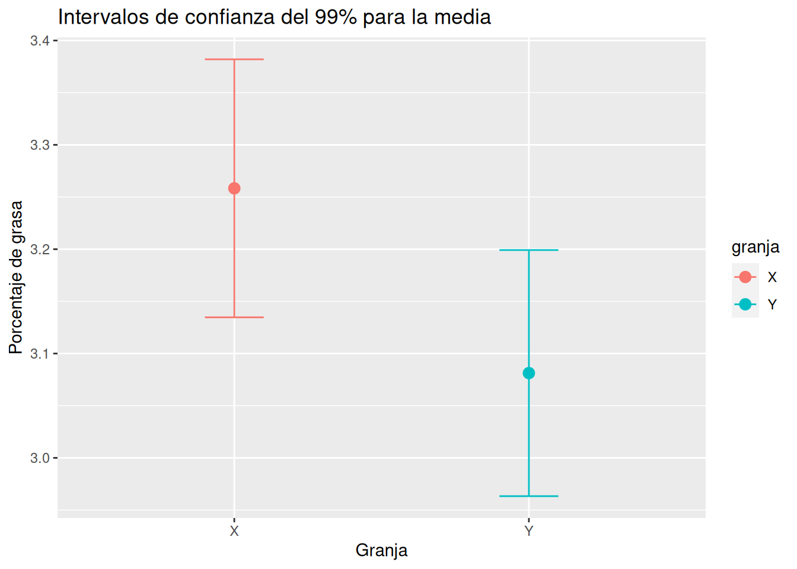

df <- data.frame(concentracion = c(17.6, 19.2, 21.3, 15.1, 17.6, 18.9, 16.2, 18.3, 19.0, 16.4 ))7 Intervalos de confianza para medias y proporciones de una población
7.1 Ejercicios Resueltos
Para la realización de esta práctica se requieren los siguientes paquetes:
library(tidyverse)
# Incluye los siguientes paquetes:
# - dplyr: para el preprocesamiento y manipulación de datos.
# - ggplot2: para la representación gráfica.
# - purrr: para aplicar funciones a vectores.
library(broom) # para convertir las listas con los resúmenes de los modelos de regresión a formato organizado.
library(qwraps2) # para el cálculo de intervalos de confianza para la media.
library(samplingbook) # para el cálculo de tamaños muestrales.
library(knitr) # para el formateo de tablas.
library(kableExtra) # para personalizar el formato de las tablas.Ejercicio 7.1 Se sabe que para que un fármaco sea efectivo, la concentración de su principio activo debe ser de al menos \(16\) mg/mm\(^3\). Una farmacia va a comprar un lote de este medicamento, pero antes quiere asegurarse de que los medicamentos del lote son efectivos y para ello analiza la concentración de principio activo en una muestra aleatoria de \(10\) envases tomados del lote, obteniendo los siguientes resultados en mg/mm\(^{3}\):
\[ 17.6 \quad 19.2 \quad 21.3 \quad 15.1 \quad 17.6 \quad 18.9 \quad 16.2 \quad 18.3 \quad 19.0 \quad 16.4 \]
-
Crear un conjunto de datos con los datos de la muestra.
Solución -
Calcular la concentración media de principio activo de la muestra. ¿Puede afirmarse que los medicamentos del lote son efectivos?
Soluciónmean(df$concentracion)[1] 17.96A pesar de la concentración media está por encima de \(16\) mg/mm\(^3\), se trata de una estimación puntual, y por tanto, no podemos garantizar que la media poblacional esté por encima de \(16\) mg/mm\(^3\). ¿Puede afirmarse con este nivel de confianza que los medicamentos del lote son efectivos?
-
Calcular el intervalo de confianza para la media de la concentración del lote con nivel de confianza del \(95\%\) (nivel de significación \(\alpha =0.05\)). ¿Puede afirmarse ahora que los medicamentos del lote son efectivos?
Soluciónt1 <- t.test(df$concentracion) t1$conf.int[1] 16.68158 19.23842 attr(,"conf.level") [1] 0.95Como el intervalo entero está por encima de \(16\) mg/mm\(^3\), podemos afirmar con una confianza del \(95\%\) que la concentración media de principio activo del lote está por encima de \(16\) mg/mm\(^3\) y por tanto podemos concluir que los medicamentos del lote son efectivos.
-
¿Puede afirmarse que los medicamentos del lote son efectivos con un \(99\%\) de confianza?
Soluciónt2 <- t.test(df$concentracion, conf.level = 0.99) t2$conf.int[1] 16.1234 19.7966 attr(,"conf.level") [1] 0.99Como el intervalo entero sigue estando por encima de \(16\) mg/mm\(^3\), podemos afirmar con una confianza del \(99\%\) que los medicamentos del lote son efectivos.
-
Si definimos la precisión del intervalo como la inversa de su amplitud, ¿cómo afecta a la precisión del intervalo de confianza el tomar niveles de significación cada vez más altos? ¿Cuál puede ser la explicación?
SoluciónAmplitud intervalo 95%: 2.55684921520655Amplitud intervalo 99%: 3.67319282263829Como se ve, al aumentar el nivel de confianza del intervalo, la precisión disminuye. Ello es debido a que para tener más confianza de capturar el verdadero valor de la media en el intervalo, debemos hacer mayor el intervalo.
-
¿Qué tamaño muestral sería necesario para obtener una estimación del contenido medio de principio activo con un margen de error de \(\pm 0.5\) mg/mm\(^3\) y una confianza del 95%?
SoluciónEl tamaño muestral necesario para construir un intervalo de confianza para la media depende del nivel de confianza deseado (\(0.95\) en este caso), del error o semiamplitud del intervalo deseado (\(0.5\) en este caso) y de la desviación típica poblacional, que no se conoce, pero se puede estimar mediante la cuasidesviación típica muestral.
Loading required package: ppsLoading required package: samplingLoading required package: surveyLoading required package: gridLoading required package: MatrixLoading required package: survivalAttaching package: 'survival'The following objects are masked from 'package:sampling': cluster, strataAttaching package: 'survey'The following object is masked from 'package:graphics': dotchartsample.size.mean(e = 0.5, S = sd(df$concentracion), level = 0.95)sample.size.mean object: Sample size for mean estimate Without finite population correction: N=Inf, precision e=0.5 and standard deviation S=1.7871 Sample size needed: 50
Ejercicio 7.2 Una central de productos lácteos recibe diariamente la leche de dos granjas \(X\) e \(Y\). Para analizar la calidad de la leche, durante una temporada, se controla el porcentaje de materia grasa de la leche que proviene de ambas granjas, con los siguientes resultados:
\[ \begin{array}{c|c} X & Y \\ \hline \begin{array}[t]{rr} 3.4 & 3.4 \\ 3.2 & 3.5 \\ 3.3 & 3.3 \\ 3.2 & 3.2 \\ 3.3 & 3.0 \\ 3.1 & 3.2 \\ \end{array} & \begin{array}[t]{rr} 2.8 & 2.9 \\ 3.0 & 3.2 \\ 3.2 & 3.1 \\ 2.9 & 2.9 \\ 3.1 & 3.2 \\ 2.9 & 3.1 \\ 3.3 & 3.2 \\ 3.2 & 3.3 \\ \end{array} \end{array} \]
-
Crear un conjunto de datos con los datos de la muestra.
-
Calcular el contenido medio de materia grasa de la muestra de leche cada granja y los respectivos intervalos de confianza con un \(95\%\) de confianza. Dibujar los intervalos de confianza obtenidos.
SoluciónAttaching package: 'kableExtra'The following object is masked from 'package:dplyr': group_rows#| message: false tabla_ic <- df |> group_by(granja) |> summarise("Media" = mean(grasa, na.rm = T), "IC 95% Inf" = t.test(grasa)$conf.int[1], "IC 95% Sup" = t.test(grasa)$conf.int[2]) tabla_ic |> kable() |> kable_styling()granja Media IC 95% Inf IC 95% Sup X 3.258333 3.170719 3.345948 Y 3.081250 2.995950 3.166550 library(qwraps2) library(kableExtra) df |> group_by(granja) |> summarise(N = n(), "Media (IC 95%)" = frmtci(mean_ci(grasa, alpha = 0.05, qdist = qt, qdist.args = list(df = N-1)), digits = 4)) |> kable() |> kable_styling()granja N Media (IC 95%) X 12 3.2583 (3.1707, 3.3459) Y 16 3.0812 (2.9960, 3.1665) tabla_ic |> ggplot(aes(x = granja, y = Media, color = granja)) + geom_point(size = 3) + geom_errorbar(aes(ymin = `IC 95% Inf`, ymax = `IC 95% Sup`), width = 0.2) + labs(title = "Intervalos de confianza del 95% para la media", x = "Granja", y = "Porcentaje de grasa")
-
A la vista de los intervalos de confianza obtenidos ¿Existen diferencias estadísticamente significativas entre los contenidos medios de grasa de la leche de las dos granjas? En tal caso, ¿qué granja produce leche con más grasa?
SoluciónComo los intervalos no se solapan, es decir, no tienen valores en común, podemos concluir que los contenidos medios de grasa de las leches de las dos granjas son significativamente diferentes con un \(95\%\) de confianza. Además se aprecia que el intervalo de la granja \(X\) tiene valores mayores que el de la granja \(Y\), por lo que la leche de la granja \(X\) tiene más contenido de grasa que la de la granja \(Y\).
-
Repetir los cálculos anteriores tomando una confianza del \(99\%\). ¿Existen diferencias estadísticamente significativas entre el contenido medio de grasa de las leches de las dos granjas con este nivel de confianza?
Solucióntabla_ic_99 <- df |> group_by(granja) |> summarise("Media" = mean(grasa, na.rm = T), "IC 99% Inf" = t.test(grasa, conf.level = 0.99)$conf.int[1], "IC 99% Sup" = t.test(grasa, conf.level = 0.99)$conf.int[2]) tabla_ic_99 |> kable() |> kable_styling()granja Media IC 99% Inf IC 99% Sup X 3.258333 3.134701 3.381966 Y 3.081250 2.963324 3.199176 tabla_ic_99 |> ggplot(aes(x = granja, y = Media, color = granja)) + geom_point(size = 3) + geom_errorbar(aes(ymin = `IC 99% Inf`, ymax = `IC 99% Sup`), width = 0.2) + labs(title = "Intervalos de confianza del 99% para la media", x = "Granja", y = "Porcentaje de grasa")
Como se ve, ahora los dos intervalos se solapan y por tanto las medias del contenido de grasa de las leches de las dos granjas podrían ser iguales. Por tanto, no existen diferencias estadísticamente significativas entre el contenido medio de grasa de las leches de las dos granjas con un \(99º%\) de confianza.
Ejercicio 7.3 El conjunto de datos biblioteca.csv contiene los resultados de una encuesta realizada en una universidad, sobre si el alumnado utiliza habitualmente (al menos una vez a la semana) la biblioteca.
-
Crear conjunto de datos con los datos de la muestra a partir del fichero
biblioteca.csv. -
Calcular el intervalo de confianza con \(\alpha=0.01\) para la proporción del alumnado que utiliza habitualmente la biblioteca. ¿Cómo es la precisión del intervalo?
SoluciónSe trata de un intervalo poco preciso, ya que su amplitud es bastante grande.
-
¿Qué tamaño muestral sería necesario para obtener una estimación del porcentaje de alumnos que utilizan regularmente la biblioteca con un margen de error de un \(1\%\) y una confianza del \(95\%\)?
SoluciónEl tamaño muestral necesario para construir un intervalo de confianza para la media depende del nivel de confianza deseado (\(0.95\) en este caso), del error o semiamplitud del intervalo deseado (\(0.01\) en este caso) y de proporción poblacional, que no se conoce, pero se puede estimar mediante la proporción muestral.
library(samplingbook) sample.size.prop(e = 0.01, P = frec["si"]/nrow(df), level = 0.95)sample.size.prop object: Sample size for proportion estimate Without finite population correction: N=Inf, precision e=0.01 and expected proportion P=0.4706 Sample size needed: 9571 -
Calcular los intervalo de confianza para las proporciones de chicas y chicos que utilizan regularmente la biblioteca. ¿Existe una diferencia estadísticamente significativa entre la proporción de chicas y chicos que utilizan regularmente la biblioteca? En tal caso, ¿quiénes utilizan más la biblioteca?
Solucióndf |> group_by(sexo) |> count(respuesta) |> mutate(ic = map(n, \(x) tidy(prop.test(x, sum(n))))) |> unnest(ic) |> select(sexo, respuesta, n, estimate, conf.low, conf.high) |> kable()sexo respuesta n estimate conf.low conf.high H no 13 0.8125000 0.5369234 0.9502687 H si 3 0.1875000 0.0497313 0.4630766 M no 5 0.2777778 0.1071258 0.5359420 M si 13 0.7222222 0.4640580 0.8928742 Como los intervalos de confianza para las proporciones de chicos y chicas que utilizan regularmente la biblioteca no se solapan, es decir, no tienen valores en común, podemos concluir que existe una diferencia estadísticamente significativa entre ambas proporciones con un \(95\%\) de confianza. Como además el intervalo de confianza para la proporción de chicas está claramente por encima del de chicos, se concluye que hay más chicas utilizan regularmente la biblioteca.
Ejercicio 7.4 En un sondeo preelectoral se ha tomado una muestra de \(500\) personas y se ha observado que \(220\) votarían al partido \(A\) y \(180\) votarían al partido \(B\).
-
Calcular el intervalo de confianza para el porcentaje de voto al partido \(A\).
-
Calcular el intervalo de confianza para el porcentaje de voto al partido \(A\).
-
A la vista de los intervalos de confianza, ¿se puede asegurar con un \(95\%\) de confianza qué partido ganará las elecciones?
SoluciónComo ambos intervalos se solapan, no existe una diferencia estadísticamente significativa entre los porcentajes de votos a ambos partidos, y por tanto, no se puede asegurar con un \(95\%\) de confianza qué partido ganará las elecciones.
7.2 Ejercicios propuestos
Ejercicio 7.5 El conjunto de datos neonatos contiene información sobre una muestra de 320 recién nacidos en un hospital durante un año que cumplieron el tiempo normal de gestación.
Calcular el intervalo de confianza del \(99\%\) para el peso medio de los recién nacidos. ¿Entre qué valores estará el peso medio?
Calcular el intervalo de confianza para la puntuación media del Apgar al minuto de nacer y compararlo con el de la puntuación Apgar a los 5 minutos. ¿Existe una diferencia estadísticamente significativa entre las medias de las dos puntuaciones?
Calcular el intervalo de confianza para el porcentaje de niños con peso menor o igual que \(2.5\) Kg en el grupo de las madres que han fumado durante el embarazo y en el de las que no. ¿Podemos afirmar con un \(95\%\) de confianza que el que la madre fume influye significativamente en el peso de los recién nacidos?
Ejercicio 7.6 En una fábrica de componentes electrónicos, hay dos máquinas que producen un mismo tipo de chips. Se ha tomado una muestra de chips de cada máquina y se ha observado que en la primera máquina hubo 12 chips defectuosos de un total de 200, mientras que en la segunda máquina hubo un total de 10 chips defectuosos de un total de 300. ¿Se puede afirmar con un \(90\%\) de confianza que la segunda máquina produce menos chips defectuosos que la primera?